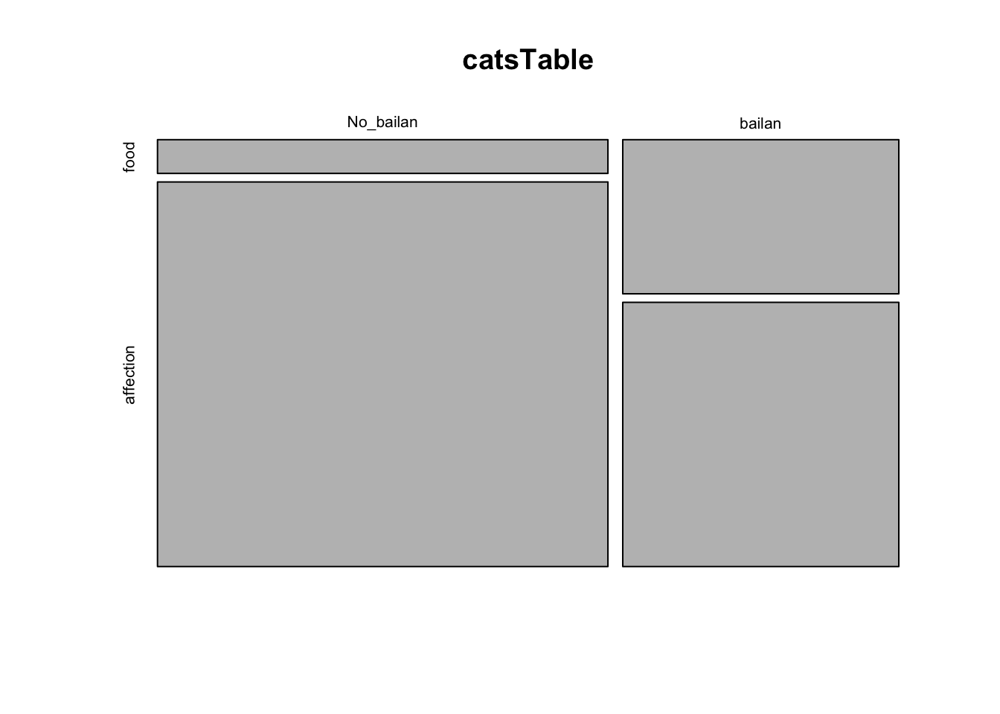
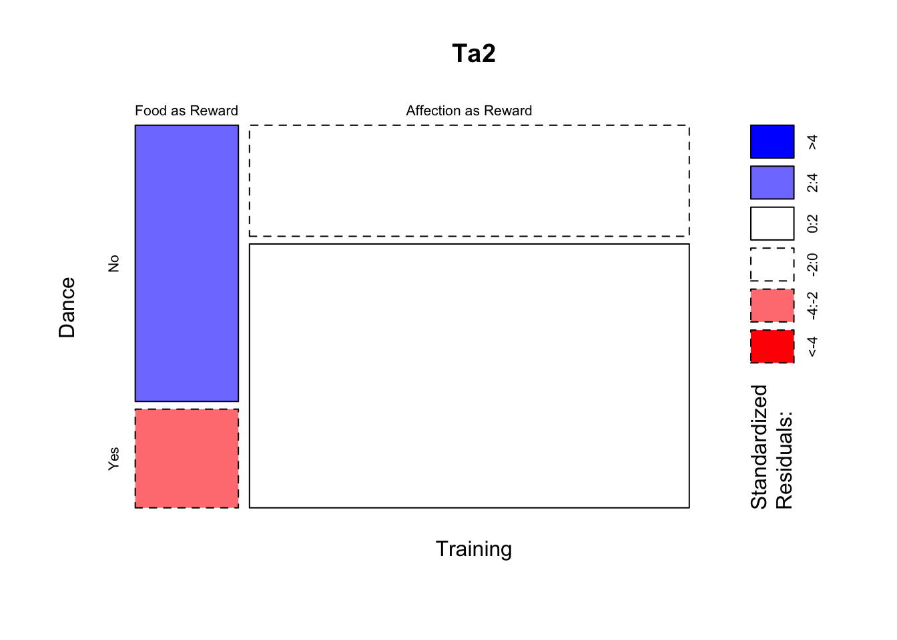
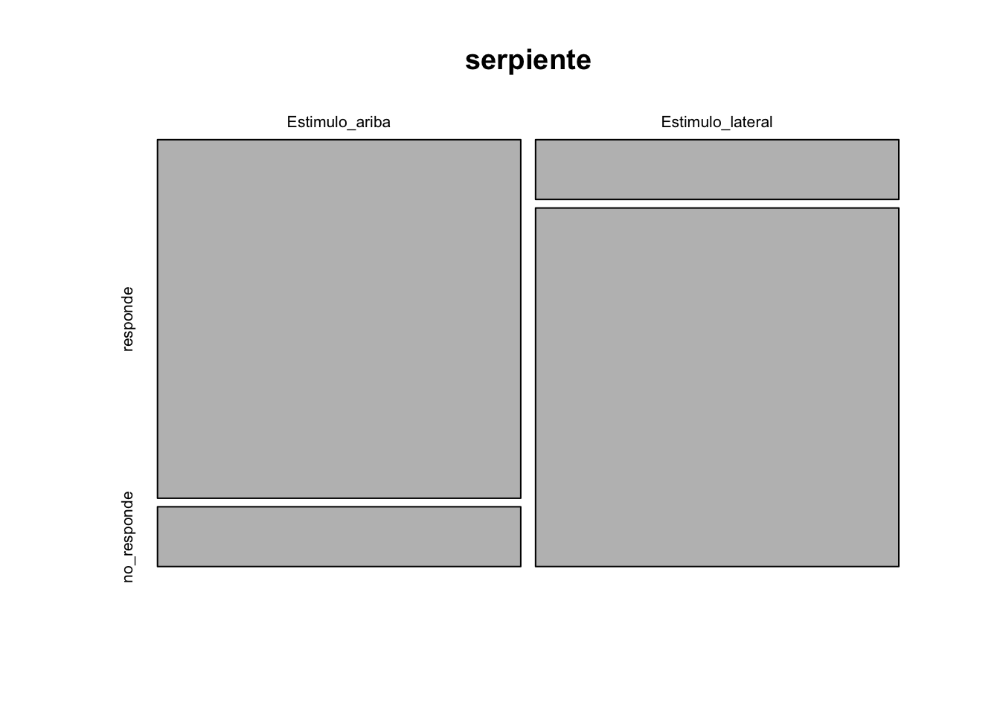

Fecha de la ultima revisión
## [1] "2020-08-06"Este tipo de prueba es frecuentemente conocido erróneamente como la prueba de Chi cuadrado. Los tipos de datos necesarios son distintos a las pruebas anteriores. En las pruebas que en los próximos módulos siempre habrá por lo menos una variable donde la unidad era el número de individuos, el largo o ancho en una unidad (cm, metro, celsius, etc) o sea una variable continua. Ahora para la pruebas de Bondad de ajuste y Tabla de Contingencia se contabiliza el número de eventos por categoría. En otra palabra es la frecuencia que ocurre un evento.
En esta sección no estamos interesado en evaluar los valores con datos que son continuos como la altura o el tamaño. Las variables que se usa son variables categóricas, o sea los valores son la frecuencia de un evento (o la ausencia de un evento).
Los datos tienen que caer exactamente en una categoría, por ejemplo
- vivo o muerto.
- presente o ausente.
- blanco, rojo, verde, azul.
- estar embarazada o no.
- Tiene el fenotipo dominante o recesivo.
- En una herencia mendeliana, los individuos son homocigóticos recesivo, dominantes o heterocigóticos.
Cuando hablamos de supuestos estamos hablando de las condiciones necesarias para que la prueba sea utilizada. El incumplimiento de de los supuestos resulta en que el los resultados de la prueba tenga un nivel de tipo de error I y tipo de error II más grande que los especificado (por ejemplo si selecciona un \(\alpha\) de 0.05, el error seria más grande). Si se usa datos usa datos erróneos puede ser que la prueba sea completamente invalida.
#----Instalar los paquetes-----
#install.packages("gmodels")
#install.packages("MASS")
if (!require("pacman")) install.packages("pacman")
pacman::p_load(gmodels, MASS, gt)
#------Activar los paquetes-----
library(gmodels)
library(MASS)
library(gt)Gregory Mendel (1822-1884) el padre de herencia “mendeliana” estaba interesada en determinar como se hereda las características de los organismos. En clases de biología y genética uno de los primeros ejemplos de herencia mendeliana es evaluar si cumple con lo que Mendel sugerió que es la razón de herencia. Si un fenotipo es heredado por un mecanismo sencillo de un gen con solamente dos alelos donde uno de los alelos es dominante y el otro es recesivo entonces hay solamente dos fenotipos posible. Por consecuencia lo más básico es determinar si la frecuencia de los fenotipos en una población sigue una razón mendeliana de 3:1, en otra palabra por cada 3 individuos de un fenotipo “x” hay un individuo del fenotipo “y”.
Los datos que estaremos usando provenien directamente de los trabajos de Mendel. Aquí esta la publicación original en aleman y su traducción en ingles.
Mendel, J.G. (1866). “Versuche über Pflanzenhybriden”, Verhandlungen des naturforschenden Vereines in Brünn, Bd. IV für das Jahr, 1865, Abhandlungen: 3–47, [1]. For the English translation, see: Druery, C.T.; Bateson, William (1901). “Experiments in plant hybridization” (PDF). Journal of the Royal Horticultural Society. 26: 1–32. Retrieved 9 October 2009.
Tabla de los resultados de experimentos original de Gregor Mendel con semillas redondas y arrugadas. Cada uno represente un experimento y la cantidad de guisantes redondos o arrugadas.
| Plantas | redonda | arrugada |
|---|---|---|
| 1 | 45 | 12 |
| 2 | 27 | 8 |
| 3 | 24 | 7 |
| 4 | 19 | 10 |
| 5 | 32 | 11 |
| 6 | 26 | 6 |
| 7 | 88 | 24 |
| 8 | 22 | 10 |
| 9 | 28 | 6 |
| 10 | 25 | 7 |
| Total | 336 | 101 |
En la pagina número 10 del articulo observamos los resultados de diferentes experimentos. En el experimento 1, la Planta #1, produjo un total de 57 semillas donde 45 eran redonda y 12 eran arrugadas. Si lo que esperamos es una razón de 3:1, los que se se espera es que 0.75:0.25 deberían ser las proporciones esperada. Creamos un vector de datos de los valores observados (obs) y un vector de datos para la proporción esperada (esp).
La prueba de bondad de ajuste y de tabla de contingencia son pruebas que evalúa la cantidad/frecuencia en las categorías y lo compara con un modelo nulo. En este caso lo que se compará es la cantidad de la frecuencia observada \(o\), con la frecuencia esperada \(e\). La formula es la siguiente
\[\chi^2=\sum_{n=i}^n\frac{\left(o-e\right)^2}{e}\]
Usamos un ejemplo sencillo de los datos de Mendel haciendo los cálculos a mano de una proporción 3:1 de herencia de los fenotipos redonda:arrugada. Los datos son de la primer linea de uno de los experimentos que hizo Mendel.
library(knitr)
library(kableExtra)
df <- data.frame(Calculos = c("Observado","Esperado", "(o-e)", "(o-e)^2", "$$\\frac{(o-e)^2}{e}$$", "$$\\chi_{total}^2$$"),
Redonda = c(45, 42.75, 2.25,5.0625, 0.1184, ""),
Arrugada = c(12,14.25, 2.25,5.0625 ,0.3553, ""),
Total = c("","","","","",0.4737))
kable(df, escape=FALSE)| Calculos | Redonda | Arrugada | Total |
|---|---|---|---|
| Observado | 45 | 12 | |
| Esperado | 42.75 | 14.25 | |
| (o-e) | 2.25 | 2.25 | |
| (o-e)^2 | 5.0625 | 5.0625 | |
| \[\frac{(o-e)^2}{e}\] | 0.1184 | 0.3553 | |
| \[\chi_{total}^2\] | 0.4737 |
Los pasos para calcular el Chi Cuadrado:
Para determinar si es significado el valor de Chi Square observado se compara con el valor critico (de la tabla). Aquí usamos R para conseguir este valor. NOte aquí se usa (1-0.05= 0.95) y el grado de libertad que es 1. Ahora se compara ese valor con 0.4737, Si el valor observado es menor que el valor 3.841459 se acepta la hipótesis nula. En este caso no hay evidencia que los fenotipos se hereden diferente a 3:1.
qchisq(0.95, 1)## [1] 3.841459No hay ninguna razón de hacer los cálculos a mano si tenemos a R para hacerlo. Nota aquí se hace la misma prueba con los mismos datos y tenemos el mismo resultado.
Lo que uno observa es el valor de la prueba de Bondad de ajuste tiene un Chi Cuadrado de 0.48, p =.49. Como el valor de p es mayor a 0.05, no se rechaza la hipótesis nula y que la frecuencia no es diferente de una proporción de 3:1.
obs<-c(45,12)
esp<-c(0.75,0.25) # este el modelo nulo
chisq.test(x=obs, p=esp)##
## Chi-squared test for given probabilities
##
## data: obs
## X-squared = 0.47368, df = 1, p-value = 0.4913Ahora evaluamos si la frecuencia de semillas redondas:arrugadas de todo el experimento sigue un patrón de 3:1. Se observa un Chi cuadrado de 0.83 y un valor de p=0.36, otra vez el valor es por encima de 0.05, y se concluye que la frecuencia de semillas redondas:redondas no es distintas a 3:1. se acepta la hipotesis nula.
Vemos que a re-evaluar los experimentos de Mendel tenemos un resultado que apoya su predicciones. Nota que Mendel NO tenia estadística para determinar si las frecuencias eran diferente o no de 3:1. El hizo observaciones y llego a unas conclusiones.
obs<-c(336,101)
esp<-c(0.75,0.25)
chisq.test(x=obs, p=esp)##
## Chi-squared test for given probabilities
##
## data: obs
## X-squared = 0.83066, df = 1, p-value = 0.3621#install.packages("MASS", dependencies = TRUE)Esta prueba se usa para
Los siguientes datos son de Field, Miles and Field 2012.
Este conjunto de datos represente un experimento ficticio de tratar de entrenar 200 gatos para que bailan basado en si se la da una recompensa o no. Este esta basado en el concepto del psicólogo Ruso Ivan Pavlov (1849-1936) de que se puede enseñar o sea motivar a una acción dando una recompensa. Lo que se llama “condicionar” un proceso de aprendizaje que ocurre entre la asociación de un estimulo ambiental y un comportamiento.
Primero entramos los datos directamente en una tabla
Los datos son los siguientes:
A 38 gatos se la ha dado una recompensa, 28 bailaron y 10 no bailaron. A 162 no se la dado recompensa, y 48 bailaron y 114 no bailaron.
Se crea dos listas con los resultados y une estas dos filas con cbind() y después se la añade un nombre a las filas con rownames(). Vemos ahora la tabla de frecuencias de cuantos gtoa bailaron o no y si fueron entrenado por comido o cariño. Nota que no se puede añadir la tilde ~ a la n de cariño.
#Crear la tabla de contingencia
comida <- c(10, 28)
carino <- c(114,48)
catsTable <- cbind(comida, carino)
rownames(catsTable)<-c("No_bailan", "bailan") # Añade el nombre a las filas
catsTable## comida carino
## No_bailan 10 114
## bailan 28 48Podemos visualizar la frecuencia de los datos con un gráfico de mosaico. Si la hipótesis nula la organización de las cajas deberían ser más o menos del mismo tamaño. En este caso lo que uno observa es que los que reciben comida y no bailan (1.1) la caja es mucha más pequeña que los que bailan y reciben comida. Nota que esto no es una prueba es una visualización de los datos y puede ayudar a entender el patrón.
mosaicplot(catsTable)
En ingles lo van a ver como “Contingency Tables”
Los valores esperados en esta caso son calculados directamente de la tabla. Para cada celda \(E_{ij}\) donde la {i} representa la fila y la {j} las columnas. El valor esperado se calcula multiplicando la suma de la fila por la suma \({R_i}\) de la suma de la columna \({C_j}\). La formula de los valores esperados es la siguiente, donde la N es la suma total de datos.
\[E_{ij}=\frac{\left(R_i\cdot C_j\right)}{N}\]
Cálculos dos de los valores esperados
\[E_{12}=\frac{\left(R_2\cdot C_1\right)}{N}= \frac{(38*76)}{200}=14.44\] 2. Los gatos que reciban cariño y no bailan
\[E_{21}=\frac{\left(R_1\cdot C_2\right)}{N}= \frac{(124*162)}{200}=100.44\] La prueba es exactamente igual como la anterior donde comparamos el valor observado con el valor esperado. Por ser más de una fila la formula cambia.
\[\chi^2=\sum_{n=i}^n\sum_{n=j}^n\frac{\left(o-e\right)^2}{e}\] El Chi Cuadrado final es
\[\chi^2=\frac{(10-23.56)^2}{23.56}+\frac{(28-14.44)^2}{14.44}+\frac{(114-100.44)^2}{100.44}+\frac{(48-61.56)^2}{61.56}=25.36\]
Con esta función se calcula el chi cuadrado con los valores esperados. Nota la leyenda al principio para poder entender la organización de los datos. El grado de liberta se calcula con la siguiente formula, el numero de filas -1 multiplicado por la cantidad de columnas menos 1, df= (R-1)(C-1). df = es para grado de libertad.
CrossTable(catsTable, fisher = TRUE, chisq = TRUE,
expected = TRUE, sresid = TRUE, format = "SAS")##
##
## Cell Contents
## |-------------------------|
## | N |
## | Expected N |
## | Chi-square contribution |
## | N / Row Total |
## | N / Col Total |
## | N / Table Total |
## |-------------------------|
##
##
## Total Observations in Table: 200
##
##
## |
## | comida | carino | Row Total |
## -------------|-----------|-----------|-----------|
## No_bailan | 10 | 114 | 124 |
## | 23.560 | 100.440 | |
## | 7.804 | 1.831 | |
## | 0.081 | 0.919 | 0.620 |
## | 0.263 | 0.704 | |
## | 0.050 | 0.570 | |
## -------------|-----------|-----------|-----------|
## bailan | 28 | 48 | 76 |
## | 14.440 | 61.560 | |
## | 12.734 | 2.987 | |
## | 0.368 | 0.632 | 0.380 |
## | 0.737 | 0.296 | |
## | 0.140 | 0.240 | |
## -------------|-----------|-----------|-----------|
## Column Total | 38 | 162 | 200 |
## | 0.190 | 0.810 | |
## -------------|-----------|-----------|-----------|
##
##
## Statistics for All Table Factors
##
##
## Pearson's Chi-squared test
## ------------------------------------------------------------
## Chi^2 = 25.35569 d.f. = 1 p = 4.767434e-07
##
## Pearson's Chi-squared test with Yates' continuity correction
## ------------------------------------------------------------
## Chi^2 = 23.52028 d.f. = 1 p = 1.236041e-06
##
##
## Fisher's Exact Test for Count Data
## ------------------------------------------------------------
## Sample estimate odds ratio: 0.1519927
##
## Alternative hypothesis: true odds ratio is not equal to 1
## p = 1.311709e-06
## 95% confidence interval: 0.06086544 0.352389
##
## Alternative hypothesis: true odds ratio is less than 1
## p = 7.7122e-07
## 95% confidence interval: 0 0.3131634
##
## Alternative hypothesis: true odds ratio is greater than 1
## p = 0.9999999
## 95% confidence interval: 0.07015399 Inf
##
##
## Estos son los mismos datos pero no sumado, en otra palabra es información específica sobre cada gato y su tratamiento y si bailo o no. La ventaja de este método es que uno no tiene que hacer el calculo y sumar la frecuancias, se deja la función CrossTable hacer la suma. Miran bien la tabla.
# La data sin sumar
Training<-c(rep(0, 38), rep(1, 162))
Dance<-c(rep(1, 10), rep(0, 28), rep(1, 114), rep(0, 48))
Training<-factor(Training, labels = c("Food as Reward", "Affection as Reward"))
Dance<-factor(Dance, labels = c("No", "Yes"))
catsData<-data.frame(Training, Dance)
gt(head(catsData, n=3))| Training | Dance |
|---|---|
| Food as Reward | Yes |
| Food as Reward | Yes |
| Food as Reward | Yes |
gt(tail(catsData, n=3))
| Training | Dance |
|---|---|
| Affection as Reward | No |
| Affection as Reward | No |
| Affection as Reward | No |
Nota que aquí se llama cada columna aparte en la función (catsData\(Training, catsData\)Dance).
CrossTable(catsData$Training, catsData$Dance,
fisher = TRUE, chisq = TRUE, expected = TRUE,
sresid = TRUE, format = "SPSS")##
## Cell Contents
## |-------------------------|
## | Count |
## | Expected Values |
## | Chi-square contribution |
## | Row Percent |
## | Column Percent |
## | Total Percent |
## | Std Residual |
## |-------------------------|
##
## Total Observations in Table: 200
##
## | catsData$Dance
## catsData$Training | No | Yes | Row Total |
## --------------------|-----------|-----------|-----------|
## Food as Reward | 28 | 10 | 38 |
## | 14.440 | 23.560 | |
## | 12.734 | 7.804 | |
## | 73.684% | 26.316% | 19.000% |
## | 36.842% | 8.065% | |
## | 14.000% | 5.000% | |
## | 3.568 | -2.794 | |
## --------------------|-----------|-----------|-----------|
## Affection as Reward | 48 | 114 | 162 |
## | 61.560 | 100.440 | |
## | 2.987 | 1.831 | |
## | 29.630% | 70.370% | 81.000% |
## | 63.158% | 91.935% | |
## | 24.000% | 57.000% | |
## | -1.728 | 1.353 | |
## --------------------|-----------|-----------|-----------|
## Column Total | 76 | 124 | 200 |
## | 38.000% | 62.000% | |
## --------------------|-----------|-----------|-----------|
##
##
## Statistics for All Table Factors
##
##
## Pearson's Chi-squared test
## ------------------------------------------------------------
## Chi^2 = 25.35569 d.f. = 1 p = 4.767434e-07
##
## Pearson's Chi-squared test with Yates' continuity correction
## ------------------------------------------------------------
## Chi^2 = 23.52028 d.f. = 1 p = 1.236041e-06
##
##
## Fisher's Exact Test for Count Data
## ------------------------------------------------------------
## Sample estimate odds ratio: 6.579265
##
## Alternative hypothesis: true odds ratio is not equal to 1
## p = 1.311709e-06
## 95% confidence interval: 2.837773 16.42969
##
## Alternative hypothesis: true odds ratio is less than 1
## p = 0.9999999
## 95% confidence interval: 0 14.25436
##
## Alternative hypothesis: true odds ratio is greater than 1
## p = 7.7122e-07
## 95% confidence interval: 3.193221 Inf
##
##
##
## Minimum expected frequency: 14.44# Yes, you can do a figure with the 2nd alternative
Ta2= xtabs(~Training+Dance, data=catsData)
Ta2## Dance
## Training No Yes
## Food as Reward 28 10
## Affection as Reward 48 114mosaicplot(Ta2, shade=TRUE)
En la siguiente tabla se encuentra el color de pello de estudiantes de la UPR. La hipótesis es que el color de pelo no esta asociado al sexo de los estudiantes.
| Color de Pello | Mujer | Hombre |
|---|---|---|
| Negro | 32 | 55 |
| Marrón | 43 | 65 |
| Rubio | 16 | 64 |
| Rojo | 9 | 16 |
Creamos
Negro=c(32,55)
Marron=c(43, 65)
Rubio=c(16,64)
Rojo=c(9,16)
HairColour=cbind(Negro,Marron, Rubio,Rojo)
rownames(HairColour)<-c("Mujer", "Hombre") # Añade el nombre a las filas
HairColour## Negro Marron Rubio Rojo
## Mujer 32 43 16 9
## Hombre 55 65 64 16¿Cual es la hipótesis nula? ¿Cual es la hipótesis alterna?
El resultado de la prueba. ¿Se acepta o rechaza la hipótesis nula?
CrossTable(HairColour, fisher = TRUE, chisq = TRUE, expected = TRUE, sresid = TRUE, format = "SPSS")##
## Cell Contents
## |-------------------------|
## | Count |
## | Expected Values |
## | Chi-square contribution |
## | Row Percent |
## | Column Percent |
## | Total Percent |
## | Std Residual |
## |-------------------------|
##
## Total Observations in Table: 300
##
## |
## | Negro | Marron | Rubio | Rojo | Row Total |
## -------------|-----------|-----------|-----------|-----------|-----------|
## Mujer | 32 | 43 | 16 | 9 | 100 |
## | 29.000 | 36.000 | 26.667 | 8.333 | |
## | 0.310 | 1.361 | 4.267 | 0.053 | |
## | 32.000% | 43.000% | 16.000% | 9.000% | 33.333% |
## | 36.782% | 39.815% | 20.000% | 36.000% | |
## | 10.667% | 14.333% | 5.333% | 3.000% | |
## | 0.557 | 1.167 | -2.066 | 0.231 | |
## -------------|-----------|-----------|-----------|-----------|-----------|
## Hombre | 55 | 65 | 64 | 16 | 200 |
## | 58.000 | 72.000 | 53.333 | 16.667 | |
## | 0.155 | 0.681 | 2.133 | 0.027 | |
## | 27.500% | 32.500% | 32.000% | 8.000% | 66.667% |
## | 63.218% | 60.185% | 80.000% | 64.000% | |
## | 18.333% | 21.667% | 21.333% | 5.333% | |
## | -0.394 | -0.825 | 1.461 | -0.163 | |
## -------------|-----------|-----------|-----------|-----------|-----------|
## Column Total | 87 | 108 | 80 | 25 | 300 |
## | 29.000% | 36.000% | 26.667% | 8.333% | |
## -------------|-----------|-----------|-----------|-----------|-----------|
##
##
## Statistics for All Table Factors
##
##
## Pearson's Chi-squared test
## ------------------------------------------------------------
## Chi^2 = 8.987184 d.f. = 3 p = 0.02946177
##
##
##
## Fisher's Exact Test for Count Data
## ------------------------------------------------------------
## Alternative hypothesis: two.sided
## p = 0.02410446
##
##
## Minimum expected frequency: 8.333333La prueba Exacta de Fisher es similar a la prueba de Bondad de Ajuste para evaluar si hay asociación entre dos variables categorías. La diferencia importante es que no es necesario que el valor esperado sea mayor de 5. Por consecuencia se puede usar con muestras más pequeñas.
Usando los datos de serpientes del ejemplo 7.4 del libro
responde <- c(6, 1)
no_responde <- c(1,6)
serpiente <- cbind(responde, no_responde)
rownames(serpiente)<-c("Estimulo_ariba", "Estimulo_lateral") # Añade el nombre a las filas
serpiente## responde no_responde
## Estimulo_ariba 6 1
## Estimulo_lateral 1 6Se puede visualizar los datos con el Mosaico
mosaicplot(serpiente)
Nota que se usa la misma función que anterior pero en los resultados hay que fijarse en la sección que dice Fisher’s Exact test. Lo que uno observa es que el valor de p es menor de 0.05 por consecuencia se rechaza la hipótesis nula. Lo que significa es que para la serpiente el angulo donde proviene el estimulo resulta en una repuesta diferente.
fisher.test(serpiente)##
## Fisher's Exact Test for Count Data
##
## data: serpiente
## p-value = 0.02914
## alternative hypothesis: true odds ratio is not equal to 1
## 95 percent confidence interval:
## 1.250285 1881.881639
## sample estimates:
## odds ratio
## 23.4961